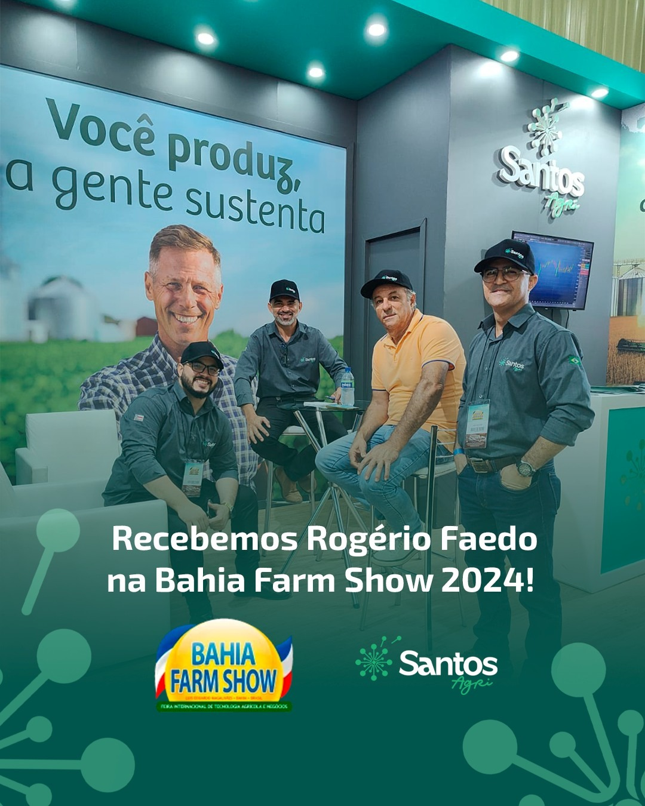
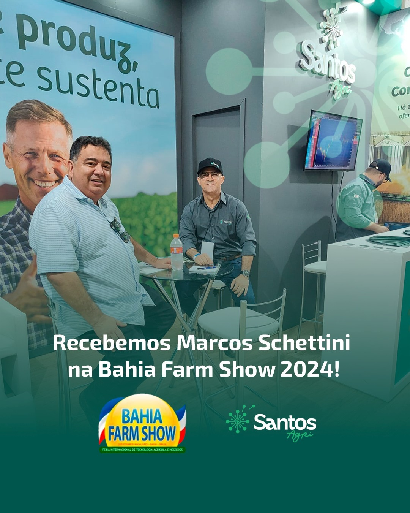
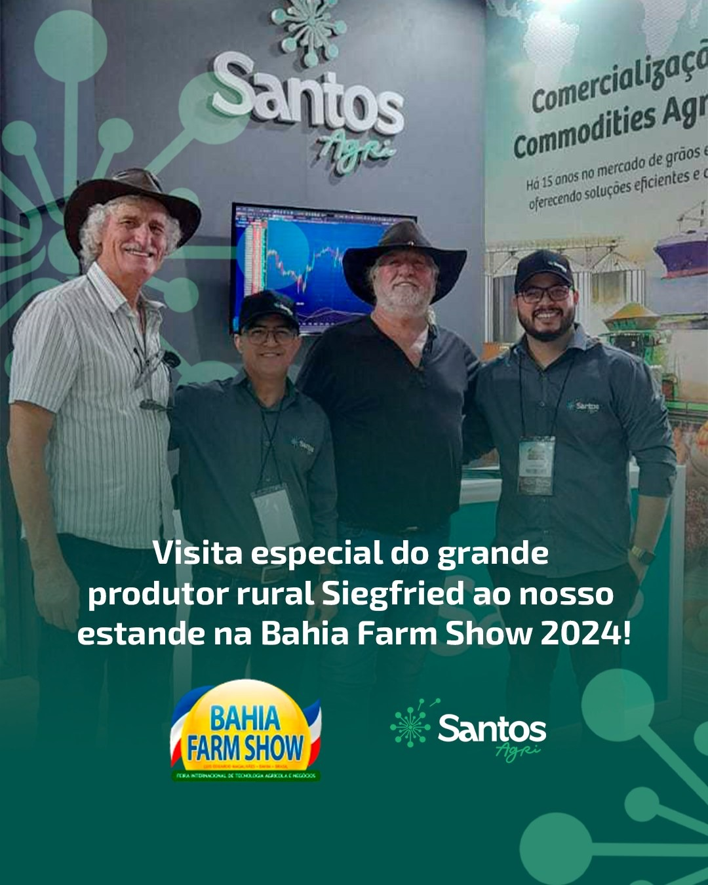
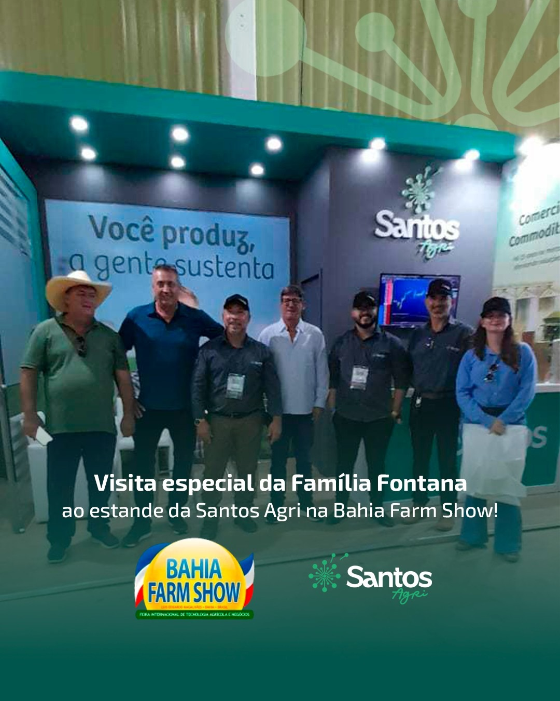
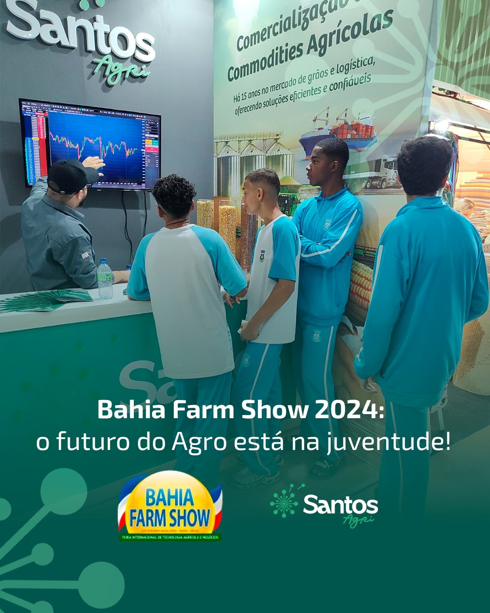
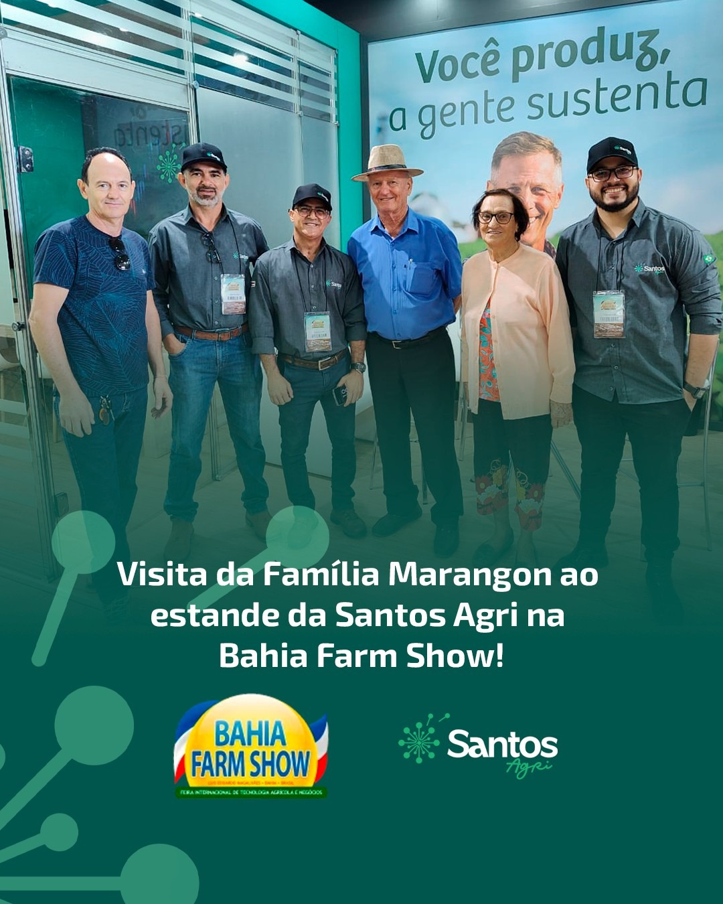
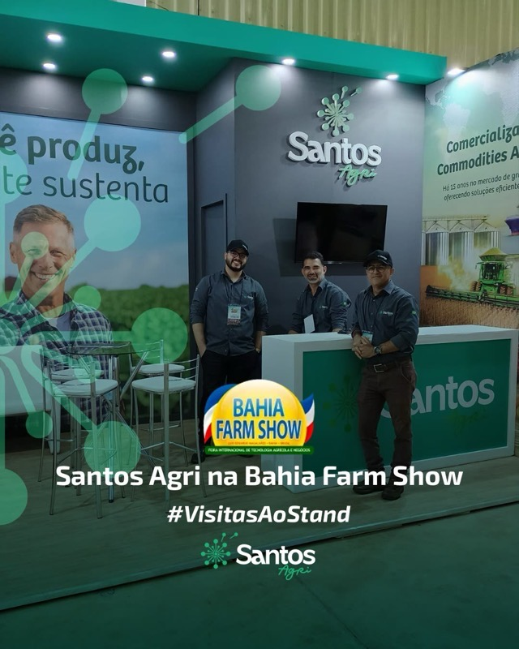
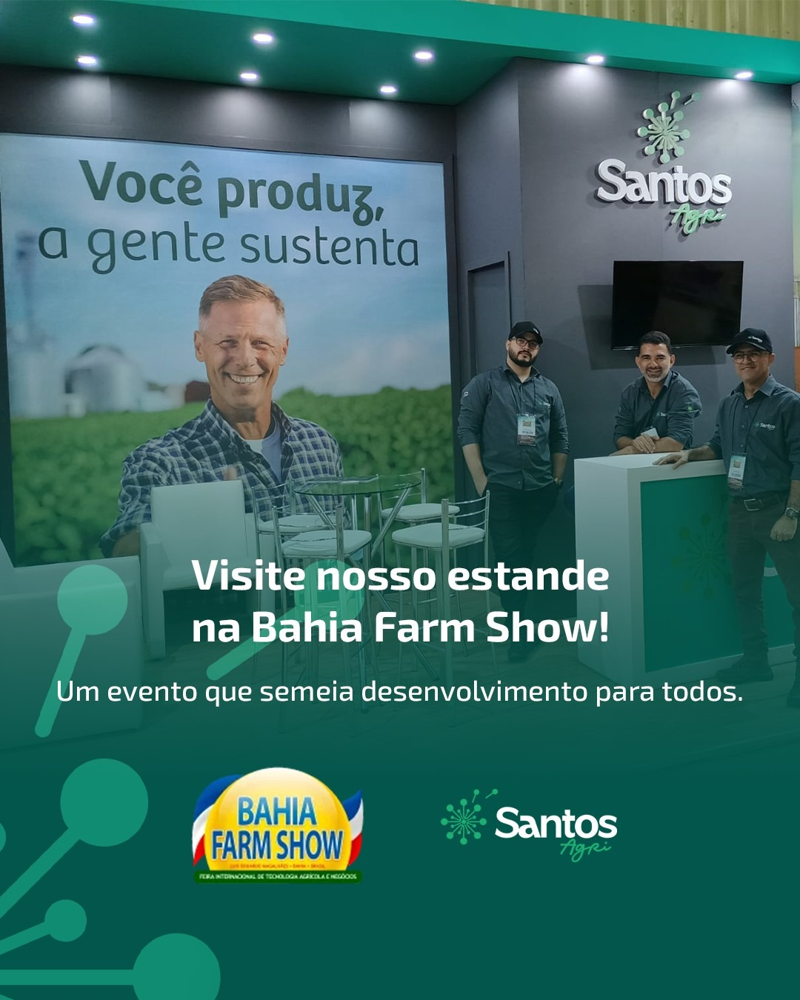

Pelo quinto ano seguido, a Santos Agri esteve presente na Bahia Farm Show, consolidando uma trajetória que começou em 2022 e que, edição após edição, aproxima ainda mais a empresa de produtores, parceiros e clientes do Oeste da Bahia.
Não é a primeira vez, e a equipe já sabe disso. Desde 2022, a Santos Agri não falta à Bahia Farm Show, um dos maiores encontros do agronegócio do Brasil, realizado todos os anos em Luís Eduardo Magalhães. Nessa edição de 2026, o estande da empresa voltou a receber produtores, cooperativas, indústrias e compradores de diferentes regiões do país e do exterior, em mais um capítulo de uma presença que já é tradição na feira.
Ao longo dos dias de evento, o time da Santos Agri acompanhou lançamentos de tecnologia, participou de rodadas de negócio e conversou com produtores sobre logística, qualidade e certificação, temas que ganham peso a cada edição, à medida que a empresa amplia sua rede de relacionamentos no Oeste baiano.
Destaques da participação
- Quinto ano consecutivo de presença na Bahia Farm Show, desde 2022
- Rodadas de negócio com produtores e cooperativas do Oeste da Bahia
- Conversas técnicas sobre logística, qualidade e certificação de exportação
De 2022 até aqui: uma presença que virou tradição
O que começou em 2022 como mais uma participação na feira se tornou, com o tempo, um compromisso fixo no calendário da Santos Agri. A cada edição, o estande da empresa recebe rostos conhecidos e novos parceiros, prova de que voltar todos os anos ao mesmo evento é também uma forma de reforçar confiança. Mais do que uma vitrine, a Bahia Farm Show reforça o compromisso da Santos Agri com transparência e proximidade em cada etapa da negociação, do campo ao contêiner, e a edição de 2026 confirma que essa presença veio para ficar.








Quer negociar grãos e sementes com a Santos Agri?
Fale com nosso time e conheça nossas condições de exportação.